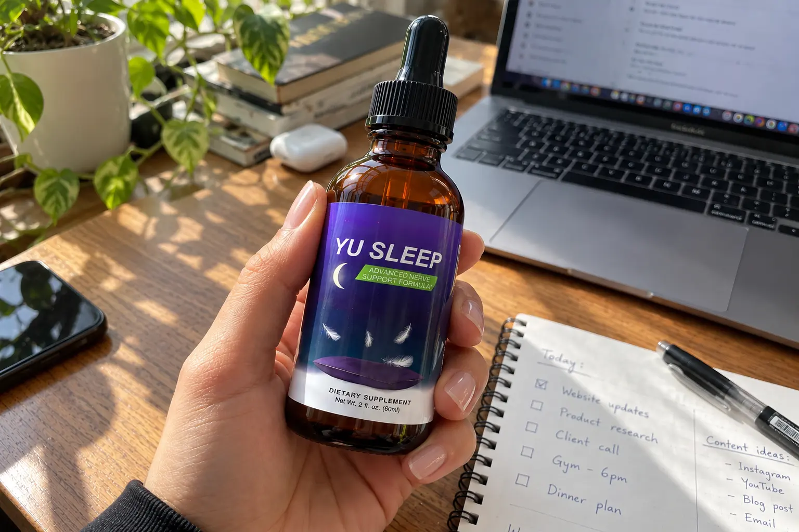

YU Sleep Review 2026: I Tested The Liquid Drops (Label Warning)

📌 TL;DR: The Bottom-Line Truth
Is YU Sleep a scam? No, but you need to know exactly what you are paying for. The formula utilizes a scientifically validated 0.9mg micro-dose of Melatonin, which effectively prevents the "melatonin hangover" caused by high-dose pills. However, 7 of its ingredients are hidden behind a 637mg proprietary blend. It is an excellent, fast-absorbing liquid sleep aid, but only worth the money if you purchase the discounted multi-bottle bundle.
If you are struggling with racing thoughts at night, you have likely tried standard over-the-counter sleep capsules. The problem? They are usually stuffed with massive 5mg to 10mg doses of synthetic melatonin that destroy your body's natural hormone production and leave you feeling exhausted the next morning.
Recently, a liquid supplement called YU Sleep has gained massive popularity for claiming to fix this exact problem. Before you spend $69 on a single bottle, we decided to perform an independent label audit. We broke down their proprietary blend, verified the liquid delivery science, and uncovered a critical safety warning that the brand buries in the fine print.
1. 🚨 Critical Safety Warning (Do You Take SSRIs?)
Before we even discuss the sleep benefits, we must address a vital clinical interaction. YU Sleep contains 5-HTP (5-Hydroxytryptophan), which is a powerful natural precursor to serotonin.
Stop Before You Buy
If you are currently taking prescription antidepressants (specifically SSRIs like Lexapro or Zoloft, or SNRIs), do not take YU Sleep without consulting your doctor. Combining 5-HTP with serotonin-altering medications can lead to a dangerous condition known as Serotonin Syndrome. If you are not on these medications, 5-HTP is incredibly safe and highly effective for mood relaxation.
2. The Label Exposed: What Is Actually In It?
The supplement industry loves using "Proprietary Blends" to hide cheap filler formulas. We conducted a strict audit of the YU Sleep nutrition label to see exactly what they disclose and what they hide.
🧪 Ingredient Transparency Audit
| Ingredient | Disclosed Dose | Transparency Verdict |
|---|---|---|
| Melatonin | 0.9 mg / serving | ✔ PASS (Perfect Micro-dose) |
| Vitamin B2 & B6 | 0.5 mg / serving | ✔ PASS (Clear Dose) |
| Tart Cherry, L-Theanine, GABA, 5-HTP, Magnesium, Apigenin, Lemon Balm | Hidden in 637 mg "Blend" | ✖ FAIL (Undisclosed Ratios) |
The Good: The 0.9mg melatonin dose is clinically brilliant. Studies show that doses under 1mg are highly effective for mimicking natural sleep cycles without causing dependency or morning brain fog.
The Bad: While 637mg is a decent total weight for a botanical blend, we have no idea how much of that is cheap Tart Cherry Juice versus expensive L-Theanine or GABA.
3. Why Liquid? (The Blood-Brain Barrier Secret)
If the proprietary blend is slightly secretive, why does YU Sleep work so well for thousands of users?
The secret lies in the liquid delivery system. One of the main ingredients, GABA, struggles immensely to cross the blood-brain barrier when swallowed as a dry powder capsule. The stomach acid destroys most of it before it can relax your nervous system.
By suspending these botanicals in a liquid tincture (taken sublingually or swallowed), the absorption rate skyrockets. The 5-HTP and L-Theanine hit your bloodstream much faster, inducing a deep sense of calm within 30 minutes, rather than the 2 hours a pill typically requires.
4. Pricing Reality: Is It Worth $69?
YU Sleep is a premium liquid, but let's look at the brutal math. If you purchase a single bottle, you are paying $69.00. For a product that hides 7 of its active ingredients in a proprietary blend, paying nearly $70 for one month is not a financially sound decision.
However, the brand aggressively incentivizes bulk purchasing. If you select the 6-bottle package, the price drops radically to $39.00 per bottle.
At $39, the fast-absorbing liquid delivery and the precision 0.9mg melatonin micro-dose absolutely justify the cost over standard, cheap drugstore pills.
5. Final Verdict: Should You Buy YU Sleep?
After auditing the label, reviewing the clinical science, and analyzing the cost, here is the bottom line:
🛡️ Final Recommendation
Do NOT buy YU Sleep if you are taking prescription SSRI/SNRI antidepressants, or if you only plan to buy a single bottle for $69 (it is too expensive at that tier).
DO BUY YU Sleep if you are suffering from "melatonin hangover" and need a fast-acting liquid formula that utilizes a safe 0.9mg micro-dose. To get real value for your money, select the multi-bottle bundle to secure the $39/bottle pricing, which is fully protected by their 60-day money-back guarantee.
Click Here To Claim The Heavily Discounted Bundle Pricing >>